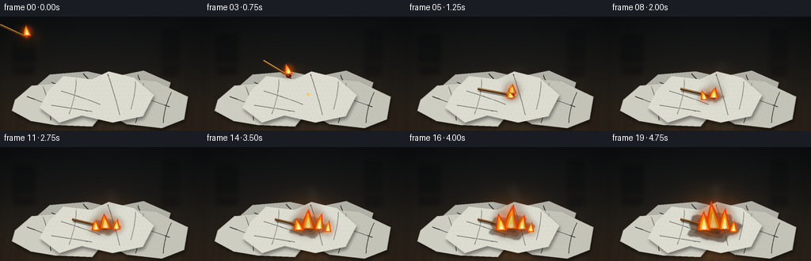
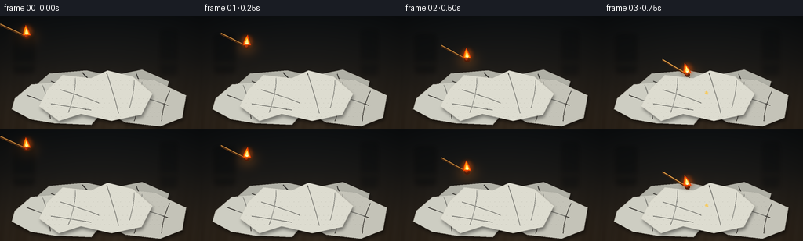
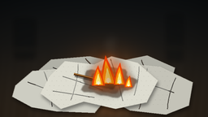

CODING AGENTS AS PIXEL WORLD MODELS
traex/GPT-5.6-Sol · material_0029
点击播放 · 原生 RGB 像素
逐轮保存的候选
回放视频、检查图与代码变化。
每份候选均可单独播放。实际图片检查记录在下方工具轨迹中。
候选 01播放与检查图
点击播放 · 原生 RGB 像素

展开代码变化
--- 上一保存版本
+++ 本次保存版本
@@ -0,0 +1,207 @@
+from pathlib import Path
+import math
+import numpy as np
+from PIL import Image, ImageDraw, ImageFilter
+import artifact_io
+
+# Deterministic, text-only procedural rendering of a burning match catching dry paper.
+W,H,N = 256,144,20
+S=3
+rng=np.random.default_rng(2929)
+
+def sc(v): return int(round(v*S))
+def pts(seq): return [(sc(x),sc(y)) for x,y in seq]
+
+def radial_light(arr, cx, cy, radius, color, strength):
+ yy,xx=np.mgrid[0:H*S,0:W*S]
+ d2=((xx/S-cx)/(radius*1.15))**2+((yy/S-cy)/radius)**2
+ a=np.exp(-2.25*d2)*strength
+ arr[:] = np.clip(arr*(1-a[...,None]*.18)+np.array(color)[None,None,:]*a[...,None],0,255)
+
+def qcurve(a,b,c,n=12):
+ out=[]
+ for t in np.linspace(0,1,n):
+ x=(1-t)**2*a[0]+2*(1-t)*t*b[0]+t*t*c[0]
+ y=(1-t)**2*a[1]+2*(1-t)*t*b[1]+t*t*c[1]
+ out.append((x,y))
+ return out
+
+def flame_shape(cx,base,w,h,sway):
+ tip=(cx+sway,base-h)
+ left=qcurve((cx-w,base),(cx-w*.90,base-h*.44),(tip[0],tip[1]),15)
+ right=qcurve(tip,(cx+w*.67,base-h*.40),(cx+w,base),15)
+ return left+right[1:]
+
+def draw_flame(im,cx,base,w,h,sway,phase=0):
+ # broad luminous aura
+ aura=Image.new('RGBA',im.size,(0,0,0,0)); ad=ImageDraw.Draw(aura)
+ ad.ellipse((sc(cx-w*1.7),sc(base-h*1.10),sc(cx+w*1.7),sc(base+h*.35)), fill=(255,84,0,88))
+ aura=aura.filter(ImageFilter.GaussianBlur(sc(max(2.5,w*.55))))
+ im.alpha_composite(aura)
+ crisp=Image.new('RGBA',im.size,(0,0,0,0)); d=ImageDraw.Draw(crisp)
+ d.polygon(pts(flame_shape(cx,base,w,h,sway)),fill=(238,62,4,245))
+ d.polygon(pts(flame_shape(cx,base-.8,w*.72,h*.79,sway*.76-0.7)),fill=(255,150,6,252))
+ d.polygon(pts(flame_shape(cx,base-1.8,w*.41,h*.51,sway*.38)),fill=(255,239,126,255))
+ d.ellipse((sc(cx-w*.22),sc(base-h*.21),sc(cx+w*.22),sc(base-1)),fill=(255,255,225,248))
+ im.alpha_composite(crisp)
+
+def paper_layer(im, poly, fill, creases, seed):
+ # soft contact shadow under each rumpled towel sheet
+ shadow=Image.new('RGBA',im.size,(0,0,0,0)); sd=ImageDraw.Draw(shadow)
+ sd.polygon(pts([(x+1.5,y+3.2) for x,y in poly]),fill=(0,0,0,105))
+ shadow=shadow.filter(ImageFilter.GaussianBlur(sc(2.1))); im.alpha_composite(shadow)
+ lay=Image.new('RGBA',im.size,(0,0,0,0)); d=ImageDraw.Draw(lay)
+ d.polygon(pts(poly), fill=fill)
+ # bright rim and slightly ragged towel edge
+ d.line(pts(poly+[poly[0]]),fill=(235,232,218,150),width=sc(.65),joint='curve')
+ rr=np.random.default_rng(seed)
+ for a,b,bright in creases:
+ # crease shadow, then offset highlight gives soft folded-paper relief
+ path=qcurve(a,((a[0]+b[0])/2+rr.uniform(-5,5),(a[1]+b[1])/2+rr.uniform(-3,3)),b,14)
+ d.line(pts(path),fill=(85,88,84,45),width=sc(1.05))
+ d.line(pts([(x,y-.65) for x,y in path]),fill=(255,255,244,bright),width=sc(.65))
+ im.alpha_composite(lay)
+
+def render(i):
+ t=i/4.0
+ yy,xx=np.mgrid[0:H*S,0:W*S]
+ # dark room and a matte wood/stone work surface
+ top=np.array([15,18,20.],float); bot=np.array([45,38,30.],float)
+ v=np.clip((yy/S)/H,0,1)[...,None]
+ arr=top*(1-v)+bot*v
+ # tabletop starts at 55; subtle directional grain
+ surf=np.clip((yy/S-54)/90,0,1)[...,None]
+ grain=(2.0*np.sin(xx/S*.18)+1.2*np.sin(xx/S*.63+yy/S*.07))[...,None]
+ arr += surf*np.array([13,8,3])[None,None,:] + surf*grain
+ # cinematic vignette
+ vig=np.clip(((xx/S-128)/165)**2+((yy/S-75)/112)**2,0,1)[...,None]
+ arr *= 1-.36*vig
+ burn=max(0,(i-4)/15)
+ if i>=4: radial_light(arr,133,101,33+burn*18,(255,116,22),.13+.28*burn)
+ # pre-impact flying match also casts faint mobile warmth
+ if i<5:
+ u=i/4
+ hx=34+99*u; hy=26+69*(u**1.22)
+ radial_light(arr,hx,hy,17,(255,125,26),.16)
+ im=Image.fromarray(np.uint8(np.clip(arr,0,255)),'RGB').convert('RGBA')
+
+ # out-of-focus workshop hints in the background
+ bg=Image.new('RGBA',im.size,(0,0,0,0)); d=ImageDraw.Draw(bg)
+ d.rectangle((sc(18),sc(24),sc(43),sc(72)),fill=(8,10,11,125))
+ d.rectangle((sc(205),sc(18),sc(225),sc(75)),fill=(8,10,11,100))
+ d.line((sc(0),sc(61),sc(256),sc(58)),fill=(99,77,50,28),width=sc(1))
+ bg=bg.filter(ImageFilter.GaussianBlur(sc(3))); im.alpha_composite(bg)
+
+ # pile of distinct dry, wrinkled paper towels (back to front)
+ paper_layer(im,[(48,86),(63,73),(110,69),(142,76),(181,68),(215,83),(207,112),(165,117),(117,110),(76,119),(44,105)],
+ (176,176,166,255), [((65,83),(118,100),80),((105,72),(143,102),70),((174,74),(188,105),68)], 1)
+ paper_layer(im,[(19,105),(40,87),(82,84),(110,92),(132,120),(116,139),(69,137),(39,132),(15,119)],
+ (205,205,194,255), [((34,101),(93,123),80),((54,88),(64,131),80),((94,92),(113,126),76)], 2)
+ paper_layer(im,[(126,91),(155,78),(197,82),(237,101),(232,130),(204,141),(160,136),(135,123)],
+ (196,195,184,255), [((147,91),(214,114),86),((181,84),(171,134),72),((216,96),(206,134),70)], 3)
+ paper_layer(im,[(61,94),(80,75),(116,79),(137,69),(169,77),(194,99),(180,126),(142,134),(103,125),(75,134),(50,115)],
+ (221,220,208,255), [((77,94),(126,111),78),((96,79),(87,123),86),((136,73),(151,124),90),((171,82),(165,117),77),((65,112),(116,120),66)], 4)
+
+ # embossed towel dimples, clipped approximately to central pile
+ tex=Image.new('RGBA',im.size,(0,0,0,0)); td=ImageDraw.Draw(tex)
+ for ry,y in enumerate(np.arange(82,132,5.8)):
+ for x in np.arange(55+(ry%2)*2.9,211,5.8):
+ # irregular ellipse boundary matching pile silhouette
+ if ((x-132)/91)**2+((y-108)/38)**2 < 1:
+ td.ellipse((sc(x-.48),sc(y-.32),sc(x+.48),sc(y+.32)),fill=(102,101,94,37))
+ td.point((sc(x-.1),sc(y-.65)),fill=(255,255,245,72))
+ im.alpha_composite(tex)
+
+ # localized soot/scorch blooms only after the hot head contacts paper
+ if i>=4:
+ prog=(i-4)/15
+ soot=Image.new('RGBA',im.size,(0,0,0,0)); sd=ImageDraw.Draw(soot)
+ cx,cy=133,101
+ rw=3+21*prog; rh=2+11*prog
+ rings=[(1.35,(56,39,26,int(65+80*prog))),(1.0,(63,34,17,int(100+85*prog))),(.62,(24,18,14,int(120+100*prog)))]
+ for k,col in rings:
+ wob=[]
+ for j in range(40):
+ a=2*math.pi*j/40
+ rad=1+.11*math.sin(5*a+1.2)+.07*math.sin(9*a+i*.17)
+ wob.append((cx+rw*k*rad*math.cos(a),cy+rh*k*rad*math.sin(a)))
+ sd.polygon(pts(wob),fill=col)
+ soot=soot.filter(ImageFilter.GaussianBlur(sc(.7))); im.alpha_composite(soot)
+
+ # gray smoke curls upward behind the fire
+ if i>=5:
+ smoke=Image.new('RGBA',im.size,(0,0,0,0)); sm=ImageDraw.Draw(smoke)
+ age=i-5
+ for j in range(4):
+ y0=94-j*10-age*1.1
+ x0=135+5*math.sin(i*.37+j*1.7)+j*1.5
+ alpha=max(0,int((34+age*2)*(1-j*.16)))
+ sm.ellipse((sc(x0-5-j*2),sc(y0-7),sc(x0+5+j*2),sc(y0+7)),fill=(110,108,100,alpha))
+ smoke=smoke.filter(ImageFilter.GaussianBlur(sc(5.2))); im.alpha_composite(smoke)
+
+ # match body: ballistic until contact, then rests diagonally on the towels
+ if i<5:
+ u=i/4
+ hx=34+99*u; hy=26+69*(u**1.22)
+ angle=math.radians(25+8*u)
+ tx=hx-37*math.cos(angle); ty=hy-37*math.sin(angle)
+ else:
+ settle=max(0,1-(i-5)/2)
+ hx=133+settle*1.2; hy=101-settle*2
+ tx=91; ty=91
+ match=Image.new('RGBA',im.size,(0,0,0,0)); md=ImageDraw.Draw(match)
+ # shadow beneath landed stick
+ if i>=4:
+ md.line((sc(tx+1),sc(ty+2.4),sc(hx+1),sc(hy+2.4)),fill=(0,0,0,105),width=sc(3))
+ md.line((sc(tx),sc(ty),sc(hx),sc(hy)),fill=(74,42,18,255),width=sc(3))
+ md.line((sc(tx),sc(ty-.65),sc(hx),sc(hy-.65)),fill=(221,157,72,255),width=sc(1))
+ # match head
+ r=3.4
+ md.ellipse((sc(hx-r),sc(hy-r*.78),sc(hx+r),sc(hy+r*.78)),fill=(61,22,11,255))
+ md.ellipse((sc(hx-r*.72),sc(hy-r*.72),sc(hx+r*.25),sc(hy+r*.15)),fill=(153,49,18,255))
+ im.alpha_composite(match)
+
+ # original burning match flame in flight / at initial contact
+ if i<7:
+ fh=13 if i<4 else 10+max(0,i-4)*2
+ fw=5.0+max(0,i-4)*.7
+ draw_flame(im,hx,hy-2.0,fw,fh,2.2*math.sin(i*1.5)-1.2)
+
+ # paper catches: multiple flickering tongues grow without engulfing entire pile
+ if i>=5:
+ p=(i-5)/14
+ flick=math.sin(i*2.17)
+ draw_flame(im,133,103,5.4+4.4*p,12+24*p+3*flick,3.2*math.sin(i*.91))
+ if i>=7:
+ draw_flame(im,121,105,3.4+4.5*p,7+16*p+2*math.sin(i*1.7),-2+2*math.sin(i*.71))
+ if i>=9:
+ draw_flame(im,147,104,3.1+4*p,7+17*p+3*math.cos(i*1.31),2+1.8*math.sin(i*.54))
+ if i>=13:
+ draw_flame(im,158,107,2.8+2*p,6+10*p+2*math.sin(i*1.9),1.7)
+
+ # brief contact sparks establish ignition event and motion
+ if 3<=i<=9:
+ sparks=Image.new('RGBA',im.size,(0,0,0,0)); sp=ImageDraw.Draw(sparks)
+ count=max(0,10-(i-4)*2)
+ for j in range(count):
+ a=0.45+j*2.31
+ dist=(i-3)*(1.8+j*.34)
+ x=133+math.cos(a)*dist; y=98-math.sin(a)*dist-(i-3)*.8
+ sp.line((sc(x),sc(y),sc(x-math.cos(a)*2.2),sc(y+math.sin(a)*2.2)),fill=(255,196,56,210),width=sc(.65))
+ im.alpha_composite(sparks)
+
+ # gentle lens bloom on the brightest fire core
+ if i>=4:
+ bloom=Image.new('RGBA',im.size,(0,0,0,0)); bd=ImageDraw.Draw(bloom)
+ rr=3+burn*7
+ bd.ellipse((sc(133-rr),sc(98-rr),sc(133+rr),sc(98+rr)),fill=(255,166,36,int(25+burn*28)))
+ bloom=bloom.filter(ImageFilter.GaussianBlur(sc(5))); im.alpha_composite(bloom)
+
+ # downsample for antialiased detail and preserve exact RGB contract
+ return np.array(im.convert('RGB').resize((W,H),Image.Resampling.LANCZOS),dtype=np.uint8)
+
+def main():
+ frames=np.stack([render(i) for i in range(N)],axis=0)
+ artifact_io.save(frames,Path(__file__).resolve().parent)
+
+if __name__=='__main__': main()
可观测工具轨迹
实际执行的命令与返回图片。
命令 1exit 0
/bin/bash -lc "cat prompt.txt && printf '\\n--- GENERATION_RULES.md ---\\n' && cat GENERATION_RULES.md"
命令 2exit 0
/bin/bash -lc "cat task_spec.json && printf '\\n--- FILES ---\\n' && find . -maxdepth 2 -type f -printf '%p\\n' | sort"
命令 3exit 0
/bin/bash -lc "command -v ffmpeg; command -v python3; python3 - <<'PY' mods=['PIL','numpy','cv2','imageio','moviepy'] for m in mods: try: x=__import__(m); print(m,'OK',getattr(x,'__version__','')) except Exception as e: print(m,'NO',e) PY"
命令 4exit 0
/bin/bash -lc "sed -n '1,260p' artifact_io.py"
命令 5exit 0
/bin/bash -lc "cat > generate.py <<'PY'
from pathlib import Path
import math
import numpy as np
from PIL import Image, ImageDraw, ImageFilter
import artifact_io
# Deterministic, text-only procedural rendering of a burning match catching dry paper.
W,H,N = 256,144,20
S=3
rng=np.random.default_rng(2929)
def sc(v): return int(round(v*S))
def pts(seq): return [(sc(x),sc(y)) for x,y in seq]
def radial_light(arr, cx, cy, radius, color, strength):
yy,xx=np.mgrid[0:H*S,0:W*S]
d2=((xx/S-cx)/(radius*1.15))**2+((yy/S-cy)/radius)**2
a=np.exp(-2.25*d2)*strength
arr[:] = np.clip(arr*(1-a[...,None]*.18)+np.array(color)[None,None,:]*a[...,None],0,255)
def qcurve(a,b,c,n=12):
out=[]
for t in np.linspace(0,1,n):
x=(1-t)**2*a[0]+2*(1-t)*t*b[0]+t*t*c[0]
y=(1-t)**2*a[1]+2*(1-t)*t*b[1]+t*t*c[1]
out.append((x,y))
return out
def flame_shape(cx,base,w,h,sway):
tip=(cx+sway,base-h)
left=qcurve((cx-w,base),(cx-w*.90,base-h*.44),(tip[0],tip[1]),15)
right=qcurve(tip,(cx+w*.67,base-h*.40),(cx+w,base),15)
return left+right[1:]
def draw_flame(im,cx,base,w,h,sway,phase=0):
# broad luminous aura
aura=Image.new('RGBA',im.size,(0,0,0,0)); ad=ImageDraw.Draw(aura)
ad.ellipse((sc(cx-w*1.7),sc(base-h*1.10),sc(cx+w*1.7),sc(base+h*.35)), fill=(255,84,0,88))
aura=aura.filter(ImageFilter.GaussianBlur(sc(max(2.5,w*.55))))
im.alpha_composite(aura)
crisp=Image.new('RGBA',im.size,(0,0,0,0)); d=ImageDraw.Draw(crisp)
d.polygon(pts(flame_shape(cx,base,w,h,sway)),fill=(238,62,4,245))
d.polygon(pts(flame_shape(cx,base-.8,w*.72,h*.79,sway*.76-0.7)),fill=(255,150,6,252))
d.polygon(pts(flame_shape(cx,base-1.8,w*.41,h*.51,sway*.38)),fill=(255,239,126,255))
d.ellipse((sc(cx-w*.22),sc(base-h*.21),sc(cx+w*.22),sc(base-1)),fill=(255,255,225,248))
im.alpha_composite(crisp)
def paper_layer(im, poly, fill, creases, seed):
# soft contact shadow under each rumpled towel sheet
shadow=Image.new('RGBA',im.size,(0,0,0,0)); sd=ImageDraw.Draw(shadow)
sd.polygon(pts([(x+1.5,y+3.2) for x,y in poly]),fill=(0,0,0,105))
shadow=shadow.filter(ImageFilter.GaussianBlur(sc(2.1))); im.alpha_composite(shadow)
lay=Image.new('RGBA',im.size,(0,0,0,0)); d=ImageDraw.Draw(lay)
d.polygon(pts(poly), fill=fill)
# bright rim and slightly ragged towel edge
d.line(pts(poly+[poly[0]]),fill=(235,232,218,150),width=sc(.65),joint='curve')
rr=np.random.default_rng(seed)
for a,b,bright in creases:
# crease shadow, then offset highlight gives soft folded-paper relief
path=qcurve(a,((a[0]+b[0])/2+rr.uniform(-5,5),(a[1]+b[1])/2+rr.uniform(-3,3)),b,14)
d.line(pts(path),fill=(85,88,84,45),width=sc(1.05))
d.line(pts([(x,y-.65) for x,y in path]),fill=(255,255,244,bright),width=sc(.65))
im.alpha_composite(lay)
def render(i):
t=i/4.0
yy,xx=np.mgrid[0:H*S,0:W*S]
# dark room and a matte wood/stone work surface
top=np.array([15,18,20.],float); bot=np.array([45,38,30.],float)
v=np.clip((yy/S)/H,0,1)[...,None]
arr=top*(1-v)+bot*v
# tabletop starts at 55; subtle directional grain
surf=np.clip((yy/S-54)/90,0,1)[...,None]
grain=(2.0*np.sin(xx/S*.18)+1.2*np.sin(xx/S*.63+yy/S*.07))[...,None]
arr += surf*np.array([13,8,3])[None,None,:] + surf*grain
# cinematic vignette
vig=np.clip(((xx/S-128)/165)**2+((yy/S-75)/112)**2,0,1)[...,None]
arr *= 1-.36*vig
burn=max(0,(i-4)/15)
if i>=4: radial_light(arr,133,101,33+burn*18,(255,116,22),.13+.28*burn)
# pre-impact flying match also casts faint mobile warmth
if i<5:
u=i/4
hx=34+99*u; hy=26+69*(u**1.22)
radial_light(arr,hx,hy,17,(255,125,26),.16)
im=Image.fromarray(np.uint8(np.clip(arr,0,255)),'RGB').convert('RGBA')
# out-of-focus workshop hints in the background
bg=Image.new('RGBA',im.size,(0,0,0,0)); d=ImageDraw.Draw(bg)
d.rectangle((sc(18),sc(24),sc(43),sc(72)),fill=(8,10,11,125))
d.rectangle((sc(205),sc(18),sc(225),sc(75)),fill=(8,10,11,100))
d.line((sc(0),sc(61),sc(256),sc(58)),fill=(99,77,50,28),width=sc(1))
bg=bg.filter(ImageFilter.GaussianBlur(sc(3))); im.alpha_composite(bg)
# pile of distinct dry, wrinkled paper towels (back to front)
paper_layer(im,[(48,86),(63,73),(110,69),(142,76),(181,68),(215,83),(207,112),(165,117),(117,110),(76,119),(44,105)],
(176,176,166,255), [((65,83),(118,100),80),((105,72),(143,102),70),((174,74),(188,105),68)], 1)
paper_layer(im,[(19,105),(40,87),(82,84),(110,92),(132,120),(116,139),(69,137),(39,132),(15,119)],
(205,205,194,255), [((34,101),(93,123),80),((54,88),(64,131),80),((94,92),(113,126),76)], 2)
paper_layer(im,[(126,91),(155,78),(197,82),(237,101),(232,130),(204,141),(160,136),(135,123)],
(196,195,184,255), [((147,91),(214,114),86),((181,84),(171,134),72),((216,96),(206,134),70)], 3)
paper_layer(im,[(61,94),(80,75),(116,79),(137,69),(169,77),(194,99),(180,126),(142,134),(103,125),(75,134),(50,115)],
(221,220,208,255), [((77,94),(126,111),78),((96,79),(87,123),86),((136,73),(151,124),90),((171,82),(165,117),77),((65,112),(116,120),66)], 4)
# embossed towel dimples, clipped approximately to central pile
tex=Image.new('RGBA',im.size,(0,0,0,0)); td=ImageDraw.Draw(tex)
for ry,y in enumerate(np.arange(82,132,5.8)):
for x in np.arange(55+(ry%2)*2.9,211,5.8):
# irregular ellipse boundary matching pile silhouette
if ((x-132)/91)**2+((y-108)/38)**2 < 1:
td.ellipse((sc(x-.48),sc(y-.32),sc(x+.48),sc(y+.32)),fill=(102,101,94,37))
td.point((sc(x-.1),sc(y-.65)),fill=(255,255,245,72))
im.alpha_composite(tex)
# localized soot/scorch blooms only after the hot head contacts paper
if i>=4:
prog=(i-4)/15
soot=Image.new('RGBA',im.size,(0,0,0,0)); sd=ImageDraw.Draw(soot)
cx,cy=133,101
rw=3+21*prog; rh=2+11*prog
rings=[(1.35,(56,39,26,int(65+80*prog))),(1.0,(63,34,17,int(100+85*prog))),(.62,(24,18,14,int(120+100*prog)))]
for k,col in rings:
wob=[]
for j in range(40):
a=2*math.pi*j/40
rad=1+.11*math.sin(5*a+1.2)+.07*math.sin(9*a+i*.17)
wob.append((cx+rw*k*rad*math.cos(a),cy+rh*k*rad*math.sin(a)))
sd.polygon(pts(wob),fill=col)
soot=soot.filter(ImageFilter.GaussianBlur(sc(.7))); im.alpha_composite(soot)
# gray smoke curls upward behind the fire
if i>=5:
smoke=Image.new('RGBA',im.size,(0,0,0,0)); sm=ImageDraw.Draw(smoke)
age=i-5
for j in range(4):
y0=94-j*10-age*1.1
x0=135+5*math.sin(i*.37+j*1.7)+j*1.5
alpha=max(0,int((34+age*2)*(1-j*.16)))
sm.ellipse((sc(x0-5-j*2),sc(y0-7),sc(x0+5+j*2),sc(y0+7)),fill=(110,108,100,alpha))
smoke=smoke.filter(ImageFilter.GaussianBlur(sc(5.2))); im.alpha_composite(smoke)
# match body: ballistic until contact, then rests diagonally on the towels
if i<5:
u=i/4
hx=34+99*u; hy=26+69*(u**1.22)
angle=math.radians(25+8*u)
tx=hx-37*math.cos(angle); ty=hy-37*math.sin(angle)
else:
settle=max(0,1-(i-5)/2)
hx=133+settle*1.2; hy=101-settle*2
tx=91; ty=91
match=Image.new('RGBA',im.size,(0,0,0,0)); md=ImageDraw.Draw(match)
# shadow beneath landed stick
if i>=4:
md.line((sc(tx+1),sc(ty+2.4),sc(hx+1),sc(hy+2.4)),fill=(0,0,0,105),width=sc(3))
md.line((sc(tx),sc(ty),sc(hx),sc(hy)),fill=(74,42,18,255),width=sc(3))
md.line((sc(tx),sc(ty-.65),sc(hx),sc(hy-.65)),fill=(221,157,72,255),width=sc(1))
# match head
r=3.4
md.ellipse((sc(hx-r),sc(hy-r*.78),sc(hx+r),sc(hy+r*.78)),fill=(61,22,11,255))
md.ellipse((sc(hx-r*.72),sc(hy-r*.72),sc(hx+r*.25),sc(hy+r*.15)),fill=(153,49,18,255))
im.alpha_composite(match)
# original burning match flame in flight / at initial contact
if i<7:
fh=13 if i<4 else 10+max(0,i-4)*2
fw=5.0+max(0,i-4)*.7
draw_flame(im,hx,hy-2.0,fw,fh,2.2*math.sin(i*1.5)-1.2)
# paper catches: multiple flickering tongues grow without engulfing entire pile
if i>=5:
p=(i-5)/14
flick=math.sin(i*2.17)
draw_flame(im,133,103,5.4+4.4*p,12+24*p+3*flick,3.2*math.sin(i*.91))
if i>=7:
draw_flame(im,121,105,3.4+4.5*p,7+16*p+2*math.sin(i*1.7),-2+2*math.sin(i*.71))
if i>=9:
draw_flame(im,147,104,3.1+4*p,7+17*p+3*math.cos(i*1.31),2+1.8*math.sin(i*.54))
if i>=13:
draw_flame(im,158,107,2.8+2*p,6+10*p+2*math.sin(i*1.9),1.7)
# brief contact sparks establish ignition event and motion
if 3<=i<=9:
sparks=Image.new('RGBA',im.size,(0,0,0,0)); sp=ImageDraw.Draw(sparks)
count=max(0,10-(i-4)*2)
for j in range(count):
a=0.45+j*2.31
dist=(i-3)*(1.8+j*.34)
x=133+math.cos(a)*dist; y=98-math.sin(a)*dist-(i-3)*.8
sp.line((sc(x),sc(y),sc(x-math.cos(a)*2.2),sc(y+math.sin(a)*2.2)),fill=(255,196,56,210),width=sc(.65))
im.alpha_composite(sparks)
# gentle lens bloom on the brightest fire core
if i>=4:
bloom=Image.new('RGBA',im.size,(0,0,0,0)); bd=ImageDraw.Draw(bloom)
rr=3+burn*7
bd.ellipse((sc(133-rr),sc(98-rr),sc(133+rr),sc(98+rr)),fill=(255,166,36,int(25+burn*28)))
bloom=bloom.filter(ImageFilter.GaussianBlur(sc(5))); im.alpha_composite(bloom)
# downsample for antialiased detail and preserve exact RGB contract
return np.array(im.convert('RGB').resize((W,H),Image.Resampling.LANCZOS),dtype=np.uint8)
def main():
frames=np.stack([render(i) for i in range(N)],axis=0)
artifact_io.save(frames,Path(__file__).resolve().parent)
if __name__=='__main__': main()
PY
python3 generate.py
ls -lh pixels.npz inspection.png index.html frames/00.png frames/19.png"命令 6exit 1
/bin/bash -lc "python3 - <<'PY'
import numpy as np
z=np.load('pixels.npz')['pixels']
print('pixels',z.shape,z.dtype,'range',hex(int(z.min())),hex(int(z.max())))
# decode and summarize motion
rgb=np.stack([(z>>16)&255,(z>>8)&255,z&255],axis=-1).transpose(2,0,1,3).astype(np.uint8)
print('decoded',rgb.shape,rgb.dtype)
print('mean frame deltas',[round(float(np.abs(rgb[i].astype(int)-rgb[i-1].astype(int)).mean()),2) for i in range(1,20)])
print('unique frames',len({x.tobytes() for x in rgb}))
PY
ffmpeg -y -framerate 4 -i frames/%02d.png -c:v libx264 -pix_fmt yuv420p -movflags +faststart preview.mp4 >/tmp/fflog 2>&1 && ffprobe -v error -show_entries stream=codec_name,width,height,r_frame_rate,nb_frames,duration -of default=nw=1 preview.mp4"视觉工具实际返回图片 1

视觉工具实际返回图片 2

视觉工具实际返回图片 3

保存候选 1 份；完成命令 6 次；可验证图片返回 3 张。原始 API 响应与完整日志保留在本地。